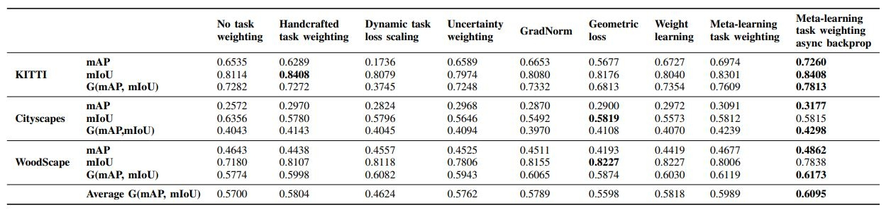
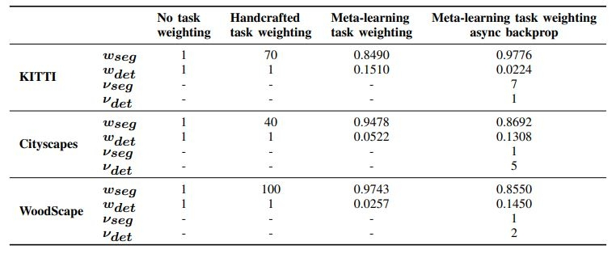

Deep multi-task networks are of particular interest for autonomous driving systems. They can potentially strike an excellent trade-off between predictive performance, hardware constraints and efficient use of information from multiple types of annotations and modalities. However, training such models is non-trivial and requires balancing learning over all tasks as their respective losses display different scales, ranges and dynamics across training. Multiple task weighting methods that adjust the losses in an adaptive way have been proposed recently on different datasets and combinations of tasks, making it difficult to compare them. In this work, we review and systematically evaluate nine task weighting strategies on common grounds on three automotive datasets (KITTI, Cityscapes and WoodScape). We then propose a novel method combining evolutionary meta-learning and task-based selective backpropagation, for computing task weights leading to reliable network training. Our method outperforms state-of-the-art methods by a significant margin on a two-task application.


@article{leang2020dynamic,
title={Dynamic Task Weighting Methods for Multi-task Networks in Autonomous Driving Systems},
author={Leang, Isabelle and Sistu, Ganesh and Burger, Fabian and Bursuc, Andrei and Yogamani, Senthil},
journal={arXiv preprint arXiv:2001.02223},
year={2020}
}